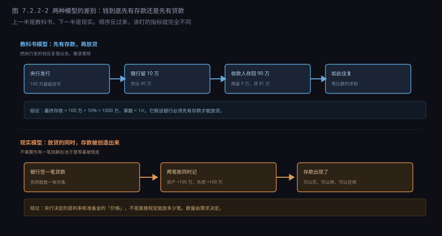
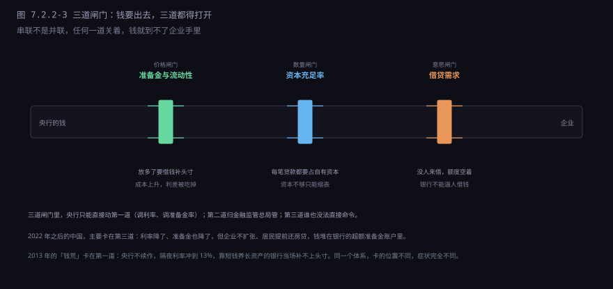
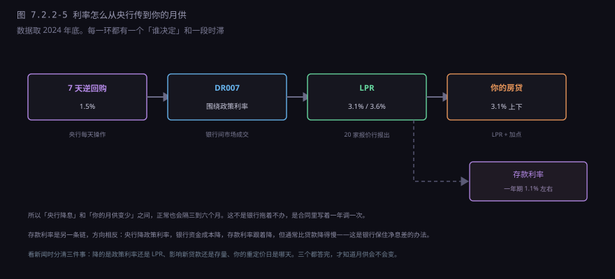
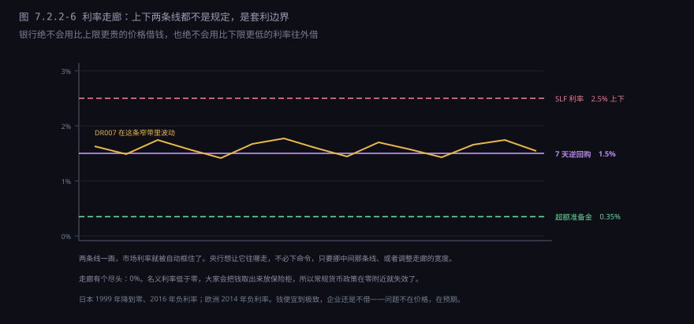

约 0.65 万字 · 6 张图 · 一笔 100 万的房贷，让银行的资产和负债同时多出 100 万。 这笔钱从哪来？拆开这个动作，你会看懂准备金、乘数和利率各自管什么
2024 年你买房，总价 200 万，首付 100 万，贷款 100 万。 在银行签完一摞合同，客户经理说「钱已经打给开发商了」。
你打开 App，看到一笔 100 万的进账，紧接着一笔 100 万的转出， 余额没变，前后不到三秒。
这笔钱是从哪来的？
不是从别人的存款里挪的。银行没有从张三的账户扣 100 万给开发商， 也没有从金库里搬一箱现金。它是在自己的账本上新写了两行字：
资产栏加一笔「对某某的贷款，100 万」；负债栏加一笔「某某的存款，100 万」。 两行同时出现，一笔都不少，账还是平的。
这就是「贷款创造存款」。你签的那份合同，本质是一张欠条—— 你承诺未来 30 年还本付息。这张欠条对银行来说是一笔资产， 因为它有权向你收钱。银行用这笔「收钱的权利」， 换了一笔「欠你的钱」，两边同时记上。
所以它不叫无中生有，叫用你的承诺换了一笔存款。 真正的凭空创造是不存在的，每一块钱的存款背后， 都有一笔对应的贷款或者资产。
紧接着，你把这 100 万付给开发商。开发商把钱存进自己的账户。 这时候账面又变了：
你的贷款还在（银行的资产没变），但你的存款没了（付掉了）； 开发商的存款多了 100 万（银行的负债没变，只是换了个主人）。 总量没变，主人换了。
但请注意一个事实：那 100 万在放贷之前并不存在， 现在它真实地躺在开发商的账上，可以拿去发工资、买材料、还债。 这就是「银行造钱」的全部含义——它造的不是钞票， 是账本上的存款，而存款在今天和钞票一样能花。
把上面这个过程写成一张表，会更清楚。假设一家银行放贷前的账是这样：
| 资产 | 金额 | 负债与权益 | 金额 |
|---|---|---|---|
| 贷款 | 900 亿 | 存款 | 950 亿 |
| 准备金 | 60 亿 | 所有者权益 | 50 亿 |
| 债券及其他 | 40 亿 | ||
| 合计 | 1000 亿 | 合计 | 1000 亿 |
放出一笔 100 万的房贷之后：
| 资产 | 金额 | 负债与权益 | 金额 |
|---|---|---|---|
| 贷款 | 900.01 亿 | 存款 | 950.01 亿 |
| 准备金 | 60 亿 | 所有者权益 | 50 亿 |
| 债券及其他 | 40 亿 | ||
| 合计 | 1000.01 亿 | 合计 | 1000.01 亿 |
两个 0.01 亿，就是那 100 万。它出现在资产栏（贷款），也出现在负债栏（存款）， 同一笔钱被记了两次，但两次记的是不同的东西： 一次记「别人欠我」，一次记「我欠别人」。
这张表最值得盯的是准备金那一栏——它一分没动。
很多人以为「银行放贷要先有存款」，所以准备金不够就放不了贷。 这个理解在放款这一刻是错的：签约、记账、打款， 全程不碰准备金。准备金是在「钱要离开这家银行」的时候才用得上。
什么时候离开？两个场景。一是客户取现，存款变成钞票，银行要从央行提现金； 二是跨行转账，钱要划到另一家银行的账上，两家银行在央行账户里一增一减。 只有这两个时刻，准备金才真正被消耗。
所以准确的说法是：准备金约束的不是「能不能放贷」，是「放出去之后能不能结账」。 这个区别很小，但它决定了后面所有关于货币乘数的讨论对不对。
如果你翻过宏观经济学教材，看到的可能是另一个故事：
央行发行 100 万基础货币，银行留下 10% 作准备金，把 90 万贷出去； 借款人把钱花掉，收款人又存回银行；银行再留 9 万，贷出 81 万； 如此循环，最后整个体系的存款变成 100 万 ÷ 10% = 1000 万。
这个故事叫货币乘数模型，公式是 1/r，r 是准备金率。 它讲得通顺、算得漂亮，被写进教材几十年。
但它有一个隐含前提：银行必须先有存款，才能放贷。 所以钱的流向是「存款 → 贷款 → 存款 → 贷款」， 央行发的每一块基础货币，被反复借出去，像滚雪球一样放大。
上一节我们已经看到，现实里这个前提不成立。 银行放贷的那一刻，存款是被同时创造出来的， 不是从已有的池子里舀出来的。顺序反了： 不是「先有存款才能放贷」，是「放贷的同时造出存款」。
英格兰银行 2014 年的一篇季报把这个话说得很直接： 教科书中对货币乘数的描述是错误的；在现代经济里， 商业银行通过放贷创造存款，央行决定的是利率， 不是数量。

这不是文字游戏，它直接决定你怎么读新闻。 按教科书模型，央行「投放基础货币」就等于「增加货币供应」， 一比十放大；按现实模型，央行投放的钱大部分趴在银行的准备金账户里， 能不能变成贷款，取决于有没有人借、银行敢不敢放。
2022 年以后的中国就是活例子：央行降了几次准、投放了不少资金， M2 增速不低，但企业中长期贷款一直起不来， 钱在银行体系里打转，没进实体经济。按教科书模型，这没法解释； 按「贷款创造存款」的模型，它太正常了——没人借，就没有存款被创造出来。
「乘数模型错了」这个说法，容易被理解成「乘数这个概念没用」。 不是。它错在因果方向，没错在数量级。
用真实数据对一下。2024 年末，中国的广义货币 M2 大约 313 万亿， 基础货币（流通中现金加银行准备金）大约 37 万亿。 两者相除，M2 是基础货币的 8.5 倍。
而同期加权平均准备金率是 6.2%。按 1/r 算， 乘数应该是 1 ÷ 6.2% ≈ 16 倍。
8.5 和 16，差了一半。差在哪？
第一，现金漏损。老百姓和企业手里要留一部分现金， 这部分钱离开了银行体系，不再参与派生。M0 大约 12 万亿， 占 M2 的 4% 左右。
第二，超额准备金。银行不会把法定之外的钱全部贷出去， 总要留一部分应付波动。2022 年之后，因为信贷需求弱， 银行留的超额准备金明显变多，这笔钱躺在央行账户里，不参与派生。
第三，不是所有存款都受同一个准备金率约束。 大行 7%、小行 5%、部分定向降准的机构更低， 用 1/r 这种单一比例去算，本来就是个粗估。
所以乘数公式更像一个上限： 在「所有钱都留在银行体系、银行不留超额、准备金率统一」的理想条件下， 货币最多能放大到 1/r 倍。现实永远达不到。
既然放贷不需要准备金，那准备金到底在管什么？
管「钱离开这家银行的那一刻」。举一个具体的日子。
某家小银行，早上开门时准备金账户里有 10 亿。 这一天它做了三件事：放出 8 亿贷款（钱都转去了别的银行）、 客户取现 1 亿、收到别的银行转来 2 亿。 日终一算：10 − 8 − 1 + 2 = 3 亿。还行，没破。
但如果它那天放出了 13 亿贷款呢？10 − 13 − 1 + 2 = −2 亿。 准备金账户不能是负数。它必须在当天闭市前，把 2 亿补上。
补的两个办法，上一节讲过：找同业借，或者找央行借。 同业借钱要付利息，央行借钱要抵押、也要付利息。 这 2 亿的利息，就是它那天多放贷的成本。
所以准备金对银行的约束是价格约束，不是数量约束： 你可以放，但放多了，日终补头寸的成本会上升； 成本上升到超过贷款利息收入，这笔生意就不划算了。 银行不是「没有额度」，是「额度用完要涨价」。
这也解释了为什么银行间市场的利率（DR007）那么重要。 它是「补头寸的价格」，全银行的放贷冲动最后都汇聚到这个价格上。 央行想让银行少放点，不需要下命令，只要让这个价格高一点， 或者干脆不放钱，让市场自己涨。
2013 年 6 月的「钱荒」就是这个机制走到了极端：央行不续作， 隔夜利率从 3% 冲到 13%，那些靠隔夜资金养长期资产的银行， 当天就被逼到了墙角。不是它们没有资产，是补不上头寸。
把上面几节收一下：准备金是价格约束，不是数量约束。 那真正卡住银行放贷的，除了价格，还有两道。

第一道，准备金与流动性，就是上面讲的补头寸成本。 它决定「放贷的边际成本」，是价格闸门。
第二道，资本充足率，这是硬数量约束。银行放贷要占用资本： 一笔 100 万的房贷，风险权重 50%，占用 50 万风险资产； 核心一级资本充足率要求 8.5% 左右，就要有 4.25 万的自有资本撑着。 资本不够，想放也放不了——这不是成本问题，是合规问题。
资本从哪来？利润留存、增发股票、发永续债。 这三条路都慢，所以资本约束一旦收紧，银行会立刻缩表—— 2017 年之后的「去杠杆」，动的就是这一道。
第三道，借贷需求，这是最容易被忽略的一道。 前两道都开着，如果没有人来借钱，贷款还是放不出去。 日本 1990 年代之后是这样，中国 2022 年之后的部分时段也是这样： 银行有额度、有资本、钱也便宜，但企业不扩张、居民不买房， 信贷需求自己消失了。
三道闸门里，央行能直接影响的只有第一道（通过利率和准备金）； 第二道归监管总局管；第三道谁也没法直接命令—— 只能靠财政、靠信心、靠收入预期。 这就是货币政策的能力边界。
既然贷款能造存款，那「市场上到底有多少钱」这个问题就变得复杂了： 存款算钱，现金算钱，理财算不算？定期存款算不算？
央行用三个口径来回答，按「能不能马上花」排序。
M0：流通中的现金，大约 12 万亿。你钱包里的、ATM 里的、 企业保险柜里的钞票和硬币，全算这块。它是唯一「不依赖银行账户」的钱。
M1：M0 加上单位活期存款，按老口径六十多万亿。 2025 年起口径调整，把个人活期和支付机构的备付金也纳进来， 数字会跳一大截，但含义不变——它衡量的是「随时能付的钱」。 M1 的核心特征是随时能付——企业经营、你扫码付款，动的都是这块。 所以 M1 增速常被当作经济活跃度的先行指标。
M2：M1 加上定期存款、储蓄存款、其他存款，大约 313 万亿。 它是「潜在购买力」：钱在那儿，但锁了一段时间。
三个数字的关系值得记住：M0 约 12 万亿，M1 六十多万亿，M2 约 313 万亿。 从现金到广义货币，放大了 26 倍，其中绝大部分是存款， 而存款的大部分是贷款造出来的。
常有人拿「M2 是 GDP 的两倍多」说中国货币超发。这个比较不太公平： 中国的融资以银行间接融资为主，企业借钱主要靠贷款， 贷款一放就造出存款，M2 自然高；美国以直接融资为主， 企业发债、发股票不经过银行，M2 就低。 M2/GDP 高，说明的是融资结构，不是印钞多少。
现在可以精确回答一个常见问题：央行降准 0.5 个百分点， 新闻说「释放长期资金 1 万亿」，这 1 万亿去哪了？
严格说，它没有「去哪」，它只是从法定准备金账户挪到了超额准备金账户。 同一个央行账户，同一个数字，只是从「不能动」变成「能动」。 银行的资产端一分钱没多，负债端也一分没多。
那它怎么变成贷款？只有当银行把这笔钱借出去、 收款人又把钱存进银行时，新的存款才被创造出来。 降准给的是「能力」，不是「结果」。
所以你会看到两种截然不同的局面：
局面一，需求旺。2020 年疫情后那一段， 企业要复工、居民要买房，银行一放贷，存款就派生出来， 降准的钱很快被用掉，M2 增速往上走。
局面二，需求弱。2022 年之后的一段时间， 企业不扩张、居民提前还房贷，银行放不出去， 降准释放的钱堆在超额准备金账户里。 数据上能看出来：超额准备金率从 1.5% 左右升到 2% 以上。
这也是为什么央行这几年反复强调「宽货币」要转「宽信用」。 前者是「银行有钱」，后者是「企业借到钱」。 中间隔着的，就是那道「有没有人愿意借」的闸门。
现在讲另一半：价格。央行不直接规定你的房贷利率， 它调的是一串「上游价格」，经过几道转换才落到你头上。

第一环，政策利率。现在主要是 7 天逆回购利率， 2024 年底是 1.5%。央行每天在公开市场做逆回购， 用这个利率把钱借给一级交易商。这是整条链的锚。
第二环，银行间市场利率。银行之间互相借钱的价格， 代表是 DR007，围绕政策利率上下浮动。央行通过「放多少、收多少」， 把这个价格框在一个窄区间里。
第三环，LPR。贷款市场报价利率，由二十家报价行 在每月 20 日（遇节假日顺延）报出，去掉最高最低取平均。 它分两个期限：1 年期和 5 年期以上。 2024 年底，1 年期是 3.1%，5 年期以上是 3.6%。
第四环，你的贷款。房贷利率 = 5 年期以上 LPR + 加点。 加点在签约时定下，之后固定不变；LPR 变了，你的利率跟着变。 2024 年很多城市的首套房贷是 LPR 减 45 个基点左右， 算下来 3.1% 上下。
存款利率是另一条链，方向相反：央行降政策利率 → 银行资金成本降 → 存款利率跟着降。2022 年以来存款利率降了好几轮， 一年期定存从 1.75% 降到 1.1% 左右。 存款利率降得比贷款利率慢，银行的净息差就被保住了—— 这也是为什么每次降息，先降的是贷款，存款要等一等。
这是最常见的抱怨：新闻说降息了，我的月供怎么一分没少？
四个原因，从简单到复杂。
第一，你签的是固定利率。2019 年 LPR 改革之前发放的 一部分贷款是固定利率，央行调什么都不影响它。 2020 年存量房贷批量转成 LPR 定价时，你可以选固定或浮动， 选了固定的，就锁死了。
第二，重定价日还没到。浮动利率也不是实时调整， 合同里写了一个「重定价日」，通常是每年 1 月 1 日，或者放款日的对月对日。 在这一天，银行按上一个月的 LPR 重新算你的利率， 一年只调一次。所以 10 月降的息，可能要等到次年 1 月才体现在月供上。
第三，加点没变。你的利率是「LPR + 加点」， LPR 降 10 个基点，你的利率就降 10 个基点，但加点部分纹丝不动。 2019 年到 2021 年买房的人，加点可能是正 60 到 100 个基点， 这批人的利率至今比新买房的人高出一大截。
第四，降息降的是「新发放」。央行降政策利率， 影响的是银行新放出去的钱。存量贷款的利率只受 LPR 影响， 而 LPR 的调整幅度通常小于政策利率。
2024 年 9 月的那次调整是个例外：央行直接要求商业银行 把存量房贷利率批量下调，把加点统一压到不低于「LPR 减 30 个基点」， 涉及几千万户、几万亿贷款。这种「批量下调」不是常规操作， 它动用的是行政指导，不是利率传导机制。
所以下次看到「降息」，先分清三件事：降的是政策利率还是 LPR、 影响的是新贷款还是存量、你的重定价日是哪天。 这三个问题答完，你才知道自己的月供会不会变。
央行调控利率，靠的是一个「走廊」：给市场利率画一个上限和一个下限， 让它在这个区间里浮动。

上限是 SLF 利率（常备借贷便利）。银行实在借不到钱， 可以拿合格债券抵押给央行，代价是比市场贵。所以市场利率再高， 也不会高过这条线——贵到一定程度，大家直接找央行。
下限是超额准备金利率，2020 年以来是 0.35%。 银行把钱放在央行，无风险拿 0.35%；所以它绝不会以低于 0.35% 的利率 把钱借给别人——除非是极短期的流动性管理。
中间是 7 天逆回购利率，央行用它把 DR007 拉到自己附近。 这条走廊的宽度，决定了市场利率的波动幅度。
走廊有一个尽头：零利率下限。 名义利率不能大幅低于零，因为持有现金的成本约等于零—— 如果存款利率是负 2%，大家会把钱取出来放保险柜。 所以利率降到零附近， 常规的货币政策就失效了。
日本 1999 年把政策利率降到零，2016 年进一步搞负利率； 欧洲央行 2014 年把存款便利利率降到负值。 结果都不太理想：钱便宜到极致，企业还是不借， 因为问题不在钱的价格，在未来的预期。 这就是凯恩斯说的「流动性陷阱」。
中国现在的政策利率是 1.5%，离零还有距离，但空间也不大了。 所以这几年央行的工具箱里多了很多「非利率」的东西： 结构性再贷款、定向降准、PSL。它们的共同点是—— 不靠价格刺激，直接指定钱去哪。
把这一节收一下。银行能造钱，但造钱这件事有四个天花板：
| 它做不到 | 原因 | 现实表现 |
|---|---|---|
| 造出借贷需求 | 银行只能等人来借，不能逼人借 | 2022 年后企业不扩张、居民提前还贷 |
| 突破资本约束 | 每笔贷款都要占用自有资本 | 资本不够时，银行宁可缩表 |
| 把钱送到指定的地方 | 银行按风险定价，不是按政策意图 | 小微、三农要靠定向工具补贴 |
| 解决结构性错配 | 钱能造，好项目造不出来 | 一边是资产荒，一边是小微融资难 |
最根本的一条是第一条。货币不是实物，它的价值来自「有人愿意收」。 银行能造出存款，但造不出「愿意借钱扩大生产的企业」和 「愿意背三十年房贷的年轻人」。这两件事取决于收入预期， 不取决于利率。
所以看货币政策，别只看央行放了多少水，要看水有没有接的管子。 管子有三段：银行敢不敢放、企业愿不愿借、居民敢不敢花。 央行只管第一段的一部分，剩下两段在别处。
下一节讲账户：你的钱凭什么被认为是你的。 银行系统里没有「你的钱」，只有「某个账户上的一行数字」。 这一行数字怎么被确认、怎么被转移、怎么被冻结， 是整套金融体系最底层的那层纸。